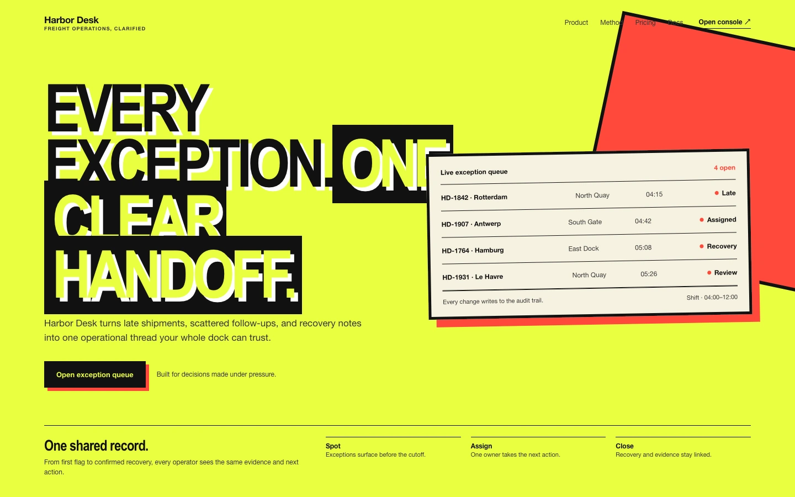
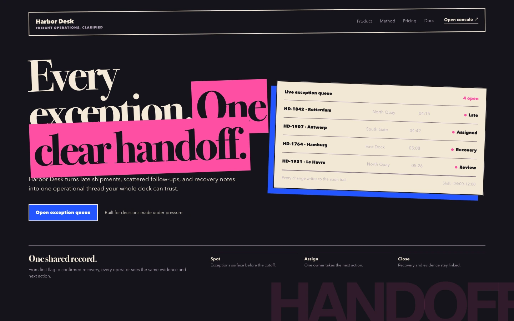
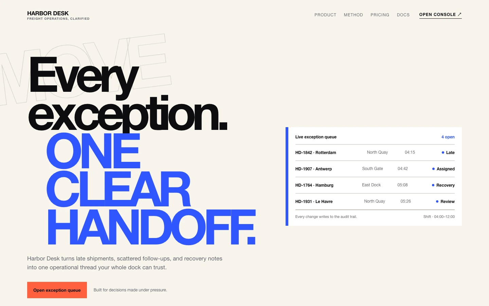
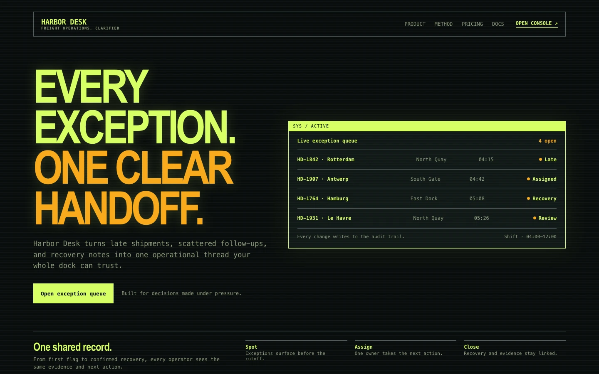
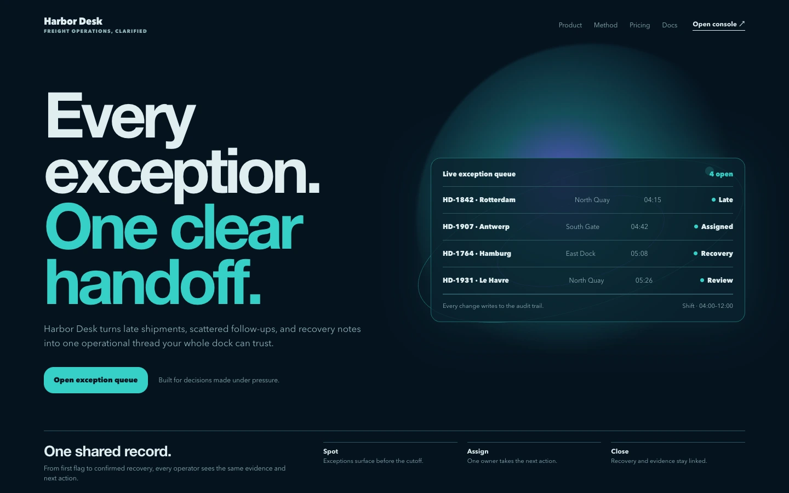
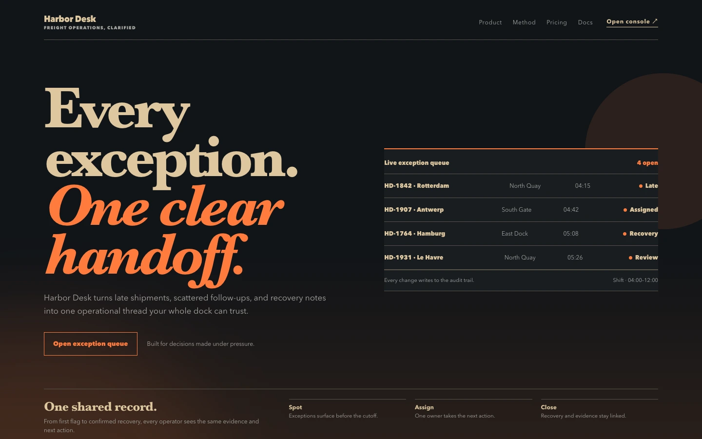
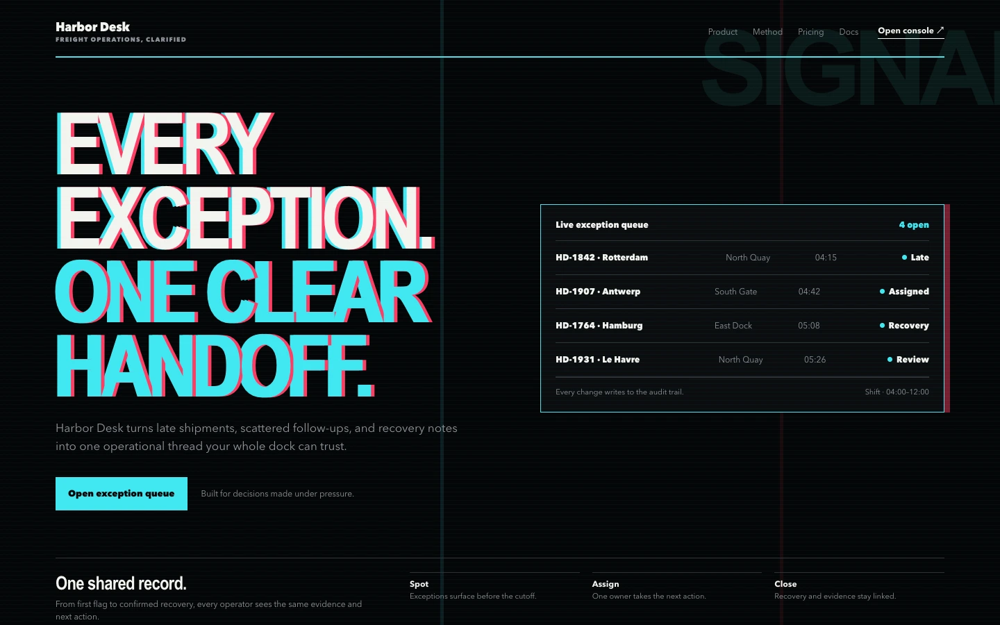
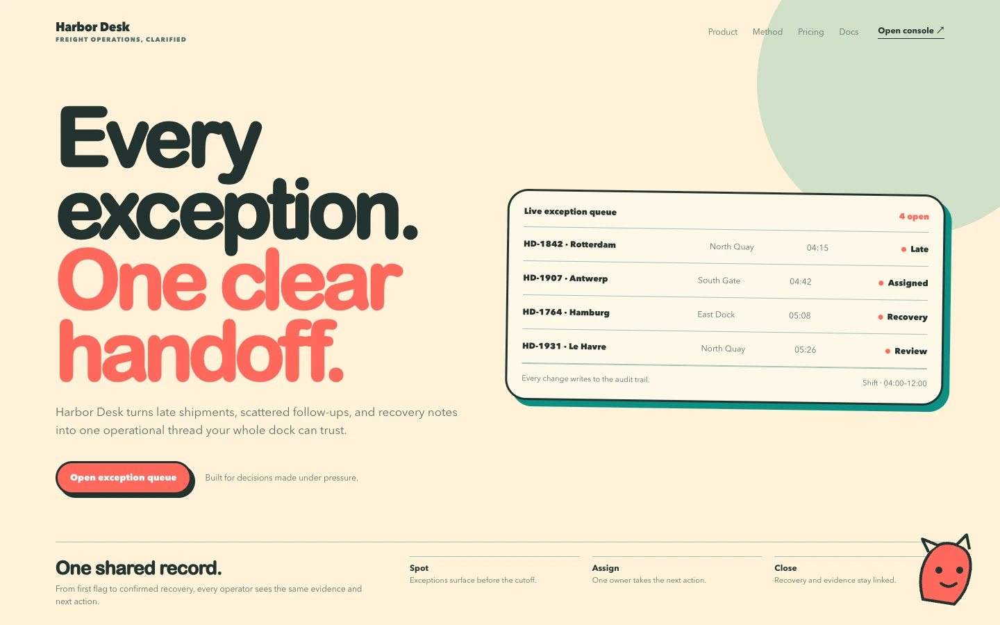

Neo-brutalist
neo-brutalistRaw blocks, hard edges, high-contrast type, and visible structural pressure.
Eight fixed high-expression directions for explicitly requested experimental web work. These are references and constraints, not prompts for generating new artwork.

neo-brutalistRaw blocks, hard edges, high-contrast type, and visible structural pressure.

maximal-collageLayered fragments, mixed scales, clipped typography, and controlled visual overload.

kinetic-typeTypography becomes the composition, sequence, and primary interaction.

retro-futuristInterface fiction, instrument panels, luminous terminals, and analog-future detail.

spatial-generativeDepth, procedural geometry, light fields, and a singular spatial mechanism.

narrative-scrollA paced story where composition, media, and scrolling reveal a mechanism.

signal-glitchControlled interruption, chromatic offsets, scanning, and high-tech instability.

character-ledA distinctive illustrated character or creature guides meaning and interaction.